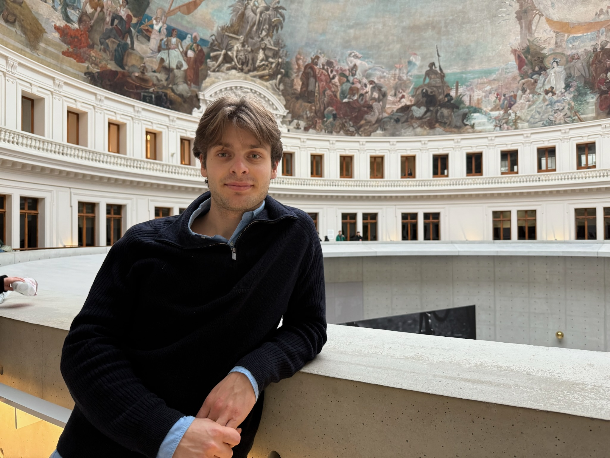

I'm a Master's student in Cybersecurity at EPFL & ETH Zurich. My work sits at the intersection of AI security and cryptography. Right now I'm focused on what happens when robots start running AI models that nobody has properly secured yet.
Before, I've worked on proof systems for encrypted computations and post-quantum cryptographic schemes.
